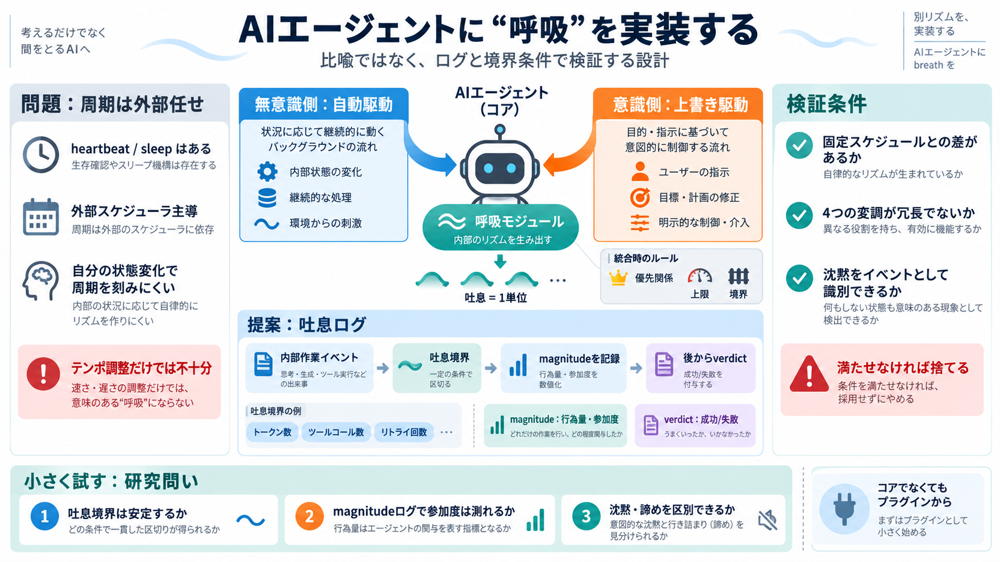

OpenClaw vs Hermes Agent 2026: AI Framework Compared
OpenClaw's architecture revolves around its Gateway, a background daemon (systemd on Linux, LaunchAgent on macOS) that a…

OpenClaw's architecture revolves around its Gateway, a background daemon (systemd on Linux, LaunchAgent on macOS) that a…
OpenClaw uses a Heartbeat system. Every 30 minutes (configurable), the Gateway wakes the agent, and the agent checks a t…
OpenClawDocs View as MarkdownView this page as plain text↗Open in ChatGPTAsk questions about this page↗Open in ClaudeAs…
Multi-agent support also lags behind Hermes Agent. OpenClaw is primarily built around a single-agent loop — it handles c…
1. Install Node.js and npm 2. Install Docker Desktop 3. Clone the repository or run npm install 4. Create an openclaw.js…